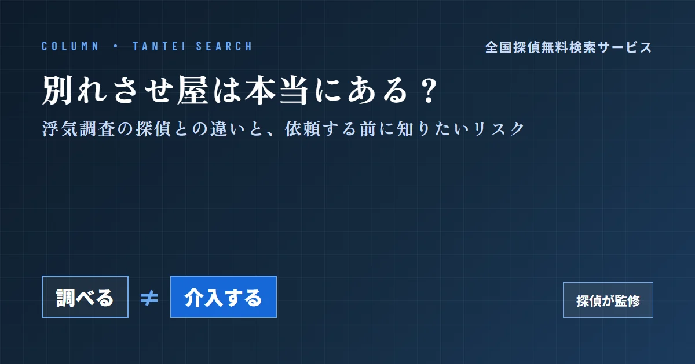
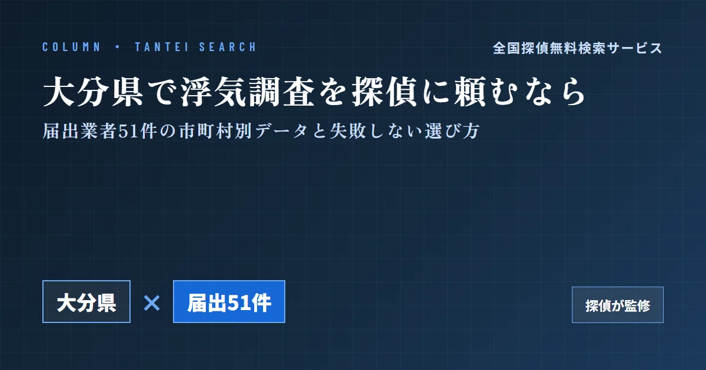
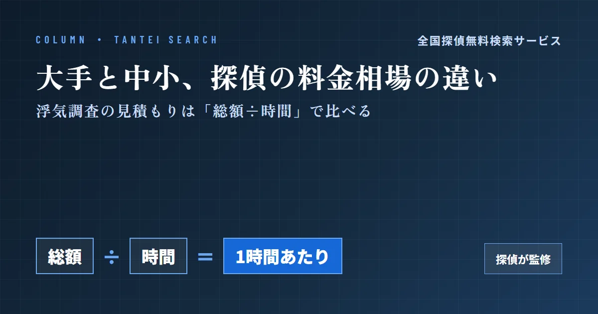
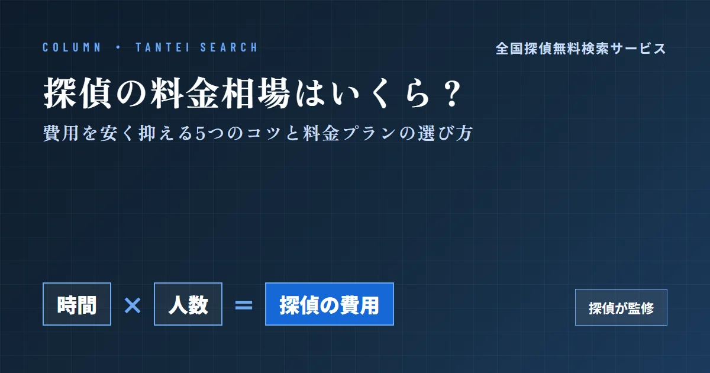
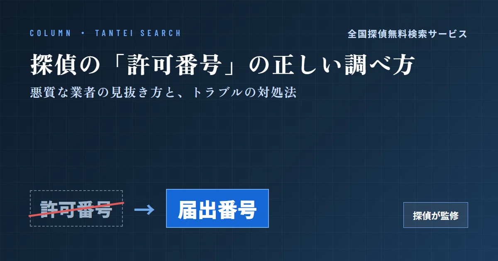
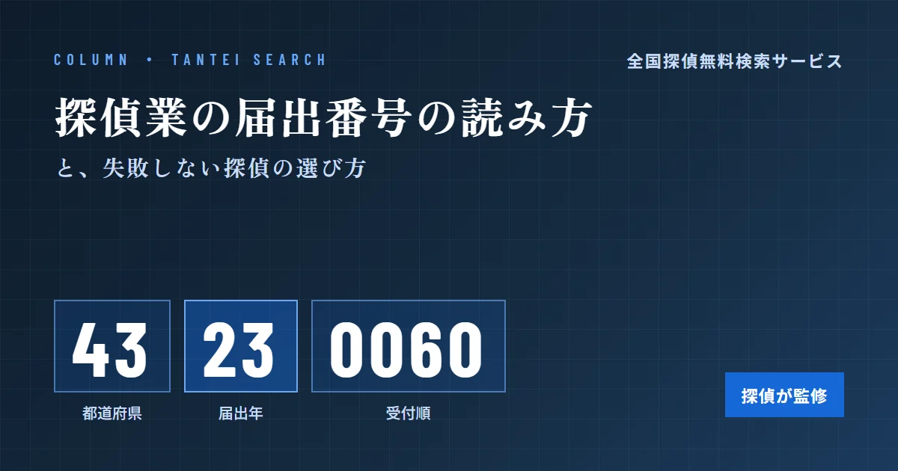

お近くの掲載済み探偵に依頼する現在地から近い順に、掲載済みの探偵事務所を地図と一覧で表示します
- 読み込み中…
地域・エリアから探す都道府県を選ぶと、その地域の届出業者の一覧へ進みます
住所から機械的に変換した位置のため、実際の地点と多少ずれる場合があります。ピンを押すと詳細ページへ進めます。赤いピンは掲載許可済みの業者です。地図データ：© OpenStreetMap contributors
おすすめコラム依頼する前に読んでおきたい記事
探偵業の届出制度や探偵の選び方を、現役の探偵の監修で解説しています。

別れさせ屋は本当にある？浮気調査の探偵との違いと、依頼する前に知りたいリスクコラム
大分県で浮気調査を探偵に頼むなら｜届出業者51件の市町村別データと失敗しない選び方コラム
大手探偵社と中小探偵事務所の料金相場の違い｜浮気調査の見積もりは「総額÷時間」で比べるコラム
探偵の料金相場はいくら？費用を安く抑える5つのコツと料金プランの選び方コラム
探偵の「許可番号」は存在しない？届出番号の正しい調べ方と、悪質な業者の見抜き方・トラブルの対処法コラム
探偵業の届出番号とは？8桁の読み方と、失敗しない探偵の選び方人口あたりの探偵事務所の数人口10万人あたりの届出業者数
都道府県ごとの届出業者数を人口で割り、人口10万人あたり何社あるかを比べました。数字が大きいほど、人口に対して探偵事務所が多い地域です。
47都道府県すべて見る
- 11愛媛県6.83
- 12岡山県6.81
- 13奈良県6.70
- 14岐阜県6.40
- 15鳥取県6.31
- 16和歌山県6.25
- 17高知県6.22
- 18三重県6.02
- 19栃木県5.90
- 20島根県5.88
- 21神奈川県5.86
- 22福岡県5.75
- 23群馬県5.73
- 24兵庫県5.43
- 25岩手県5.33
- 26京都府5.24
- 27鹿児島県5.23
- 28新潟県5.18
- 29宮城県4.94
- 30大分県4.74
- 31石川県4.60
- 32徳島県4.59
- 33福井県4.39
- 34埼玉県4.34
- 35滋賀県4.24
- 36沖縄県3.95
- 37山梨県3.85
- 38静岡県3.78
- 39千葉県3.64
- 40富山県3.46
- 41愛知県3.44
- 42山口県3.41
- 43佐賀県3.33
- 44秋田県3.18
- 45青森県3.07
- 46長崎県2.68
- 47山形県2.32
※ 届出業者数は都道府県公安委員会への届出情報（R8.5.31時点）、人口は令和7年国勢調査 人口等基本集計（総務省統計局）。届出は営業所の所在地ごとなので、実際に調査を行う範囲とは一致しない場合があります。
市区町村別：人口あたりの探偵事務所の数人口10万人あたりの届出業者数（市区町村）
市区町村ごとの届出業者数を人口で割りました。都道府県を選ぶと、その県の市区町村をすべて比べられます。
人口5万人以上の市区町村のうち、人口10万人あたりの届出業者が多い上位20です。
- 1千代田区東京都107.14
- 2大阪市中央区大阪府73.01
- 3大阪市北区大阪府58.88
- 4名古屋市中区愛知県46.48
- 5港区東京都45.88
- 6中央区東京都37.95
- 7広島市中区広島県36.77
- 8札幌市中央区北海道36.40
- 9横浜市中区神奈川県31.68
- 10新宿区東京都30.72
- 11大阪市西区大阪府28.61
- 12神戸市中央区兵庫県28.30
- 13渋谷区東京都27.64
- 14横浜市西区神奈川県26.82
- 15福岡市中央区福岡県25.44
- 16さいたま市大宮区埼玉県23.15
- 17大阪市天王寺区大阪府20.52
- 18熊本市中央区熊本県20.49
- 19塩尻市長野県19.86
- 20福岡市博多区福岡県19.31
※ 届出業者数は都道府県公安委員会への届出情報（R8.5.31時点）、人口は令和7年国勢調査 人口等基本集計（総務省統計局）。政令指定都市は区ごとに集計しています。届出データの市区町村名が国勢調査と一致しない一部の業者は集計に含めていません。
届出データから見る探偵業界の動向届出番号から読む、新規届出の推移
当サイトは、都道府県公安委員会への届出情報（合計7,554件）を集計して作成しています。届出番号には届出を行った年が含まれているため、これを集計することで新規届出件数の推移がわかります。
よくある質問このサイトの使い方
- 業者名で検索できますか？
- ページ上部の検索欄から、業者名で全国の届出業者を検索できます。都道府県を選んで絞り込むこともできます。
- 届出番号（8桁）は何を表していますか？
- 最初の2桁が届出先の都道府県番号、次の2桁が届出を行った年（西暦下2桁）、最後の4桁がその年の届出順番です。上の推移グラフも、この年の部分を集計して作成しています。
- 都道府県ごとの一覧はありますか？
- 「地域・エリアから探す」から都道府県別の一覧に進めます。各一覧ページ内でも業者名・住所での絞り込みができます。
- 地図の赤いピンは何ですか？
- 地図から探すでは、業者名・住所が実データで表示される「掲載許可済み」の業者を赤いピンで区別しています。それ以外はモザイク表示です。
この一覧は各都道府県公安委員会に届出済みの探偵業者情報を基に作成した参考情報です。電話番号・代表者の詳細住所は個人情報保護のため掲載していません。代表者名・住所の詳細（番地以降）は、各業者様から掲載許可をいただくまでモザイク表示にしています。最新の届出状況は各都道府県警察の公表情報でご確認ください。